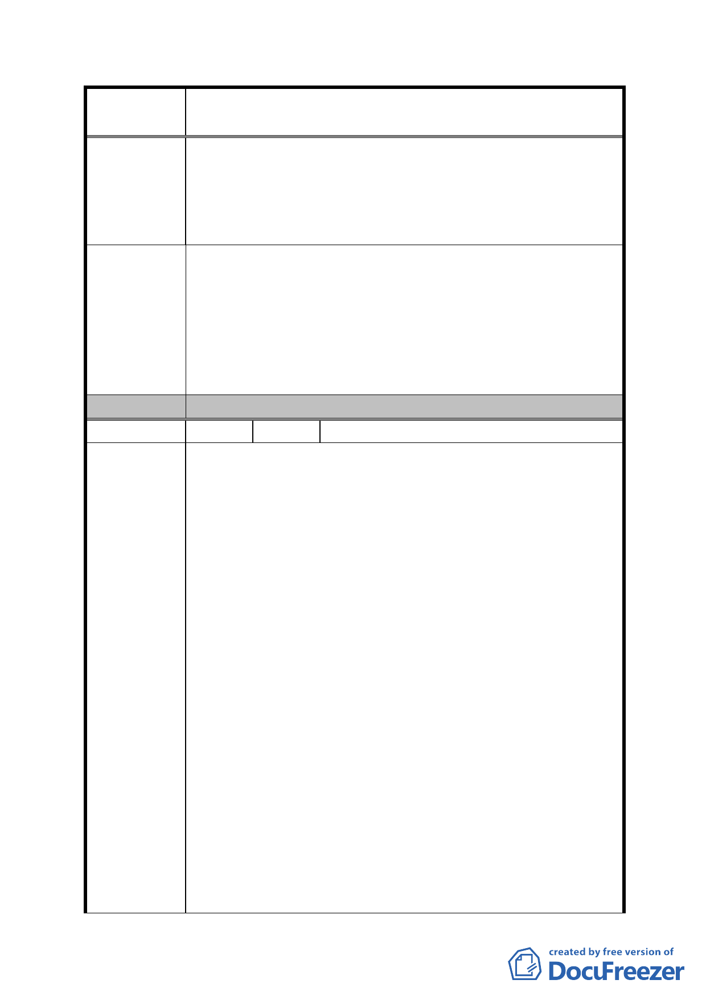

案
名
修訂臺北市「基隆河（中山橋至成美橋段）附近地區土地使
用分區與都市設計管制要點」（北段地區）計畫案
用強度、容積及高度放寬規定、建築物高度規定、指
定牆面線、公共開放空間系統、建築物基地交通規劃
及停車空間設置標準、騎樓、迴廊及無遮簷人行道、
圍牆、開發許可及代金替代等涉及本公司所有C2基地
相關限制規定，本公司主張一律不予適用。
本公司主張上開修訂計畫業有抵觸 94 年 7 月 1 日公告都市
計畫內容部份，對本公司不予適用，如土地及建築物之使
用、土地使用強度、容積及高度放寬規定、建築物高度規定、
建 議 辦 法 指定牆面線、公共開放空間系統、建築物基地交通規劃及停
車空間設置標準、騎樓、迴廊及無遮簷人行道、圍牆、開發
許可及代金替代等涉及本公司所有 C2 基地相關限制規定，
本公司主張一律不予適用。
委 員 會 決 議 同編號 1。
編 號 9 陳情人 王議員孝維（商業區及娛樂區）
前言:
A-83年區段徵收時，大彎北段和大彎南段 (Costco 附近 )
分取比例約為 3:l，大彎北段為住宅區、商業區及娛樂
區，大彎南段為倉儲區及工業區，如今大彎南段納入內
科，已可作商業使用，大彎北段商業區及娛樂區卻不能
作住宅，根本不合理。
B- 內湖科學園區從88年至96年，透過所寫「台北市內湖輕
工業區輔導管理辦法」，經九次變更，使用分區幾乎和
商業區相同，已喪失科學園區意義。
C- 內湖五期重劃區96年7月市政府標售，96年l2月隨即納
陳情理由
入內科並辦理變更，使用分區也幾乎和商業區相同。
結論：
比較大彎北段商業區及娛樂區和大彎南段、內湖科學園
區、內湖五期重劃區等地區，大彎北段商業區及娛樂區原
先規劃只有該區可作商業使用，如今其他地區皆可作商業
使用，大彎北段已無作商業使用之市場需求，地主僅卑微
要求從高強度之商業區及娛樂區變更為住宅區，卻處處受
到刁難，對大彎北段商業區及娛樂區地主而言，真是情何
以堪 !
對於此次公開展覽內容之意見 :
94年7月1日取消半數樓地板面積作住宅使用限制，公告變
更全面取消大彎北段商業區及娛樂區半數樓地板面積作
- 61 -